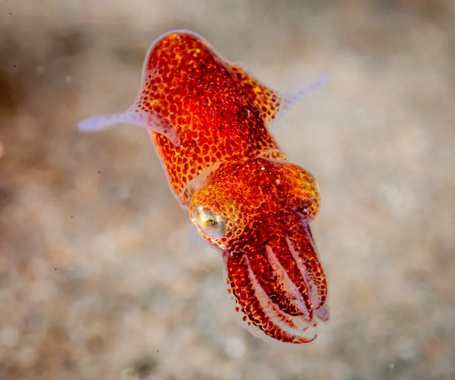

软体动物 · 动物界
太平洋僧头乌贼 Rossia pacifica

体形圆胖、鳍大如耳的底栖乌贼，栖于北太平洋冷水海底，白天埋沙潜伏，夜间捕食虾类与小鱼。
- 分类
- 门软体动物门纲头足纲目乌贼目科僧头乌贼科属僧头乌贼属
- 栖息环境
- 冷水海域沙泥底质海底，白天埋沙潜伏
- 地理分布
- 北太平洋，自日本北部、俄罗斯远东至阿拉斯加、加拿大西海岸
- 保护级别
- 常见种，无专门保护级别；底拖网是潜在威胁
物种志
太平洋僧头乌贼的胴部长约五至十厘米，体形圆胖，后端圆钝，鳍大而圆，位于胴部两侧，像一对耳朵，游泳时如裙摆摆动。体表紫褐至红褐色，散布深色斑点，皮肤能随环境改变颜色和质地，甚至隆起小疣模拟沙粒。腕短而粗，吸盘两列，触腕可缩入触腕囊内，这是僧头乌贼科的典型构造。
它分布于北太平洋的冷水海域，从日本北部、俄罗斯远东到阿拉斯加、加拿大西海岸都有，栖息在数十米至数百米深的沙泥底质海底。白天它把身体埋进沙里，只露出眼睛，夜间出来捕食虾类、小鱼和多毛类。它是底栖性的头足类，与游泳生活的乌贼不同，多靠爬行和短距离喷水移动。它寿命约一到两年，产卵后死亡，卵产于海底附着物上。
形态与习性
- 胴长约五至十厘米，体形圆胖
- 鳍大而圆，位于胴部两侧如耳
- 体色紫褐至红褐，可随环境变质地
- 触腕可缩入触腕囊内
- 习性白天埋沙，夜间捕食虾类小鱼
- 寿命约一到两年，产卵后死亡
趣味知识
- 它把身体埋进沙里只留两只眼睛，等的就是路过的虾。
- 两侧那对大圆鳍像耳朵，游起来一扇一扇的，十分可爱。
- 它的皮肤能鼓出小疙瘩冒充沙粒，趴在沙上几乎看不出来。